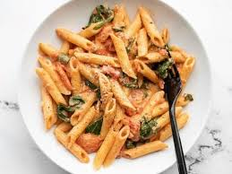

Ingridients required for pasta are:-
- 3 tbsp Olive Oil
- 10 cloves Garlic ( chopped finely)
- 3 tbsp Tomato Paste
- 500 grams Tomatoes
- 2 tsp Sugar
RECIPE OF PASTA IS
- Cook the Pasta:
Boil 4 cups of water with ½ teaspoon salt.
Add 1½ cups of pasta and cook until al dente (firm to the bite).
Drain the pasta and set aside.
- Prepare the Masala:
Heat 2 tablespoons of oil in a pan.
Add 1 teaspoon cumin seeds and let them splutter.
Add the finely chopped onion and sauté until golden brown.
Add 1 teaspoon ginger-garlic paste and sauté for another minute.
Add the chopped tomatoes and cook until they turn soft and mushy.
- Add Spices and Vegetables:
Add 1 teaspoon turmeric powder, 1 teaspoon red chili powder, and salt to taste.
Mix well and cook for a couple of minutes.
Add the mixed vegetables and cook until they are tender.
- Combine Pasta and Masala:
Add the cooked pasta to the masala mixture.
Sprinkle 1 teaspoon garam masala and mix everything well.
Cook for another 2-3 minutes, allowing the pasta to absorb the flavors.
- Garnish and Serve:
Garnish with freshly chopped coriander leaves.
Serve hot and enjoy your delicious Indian-style Masala Pasta!